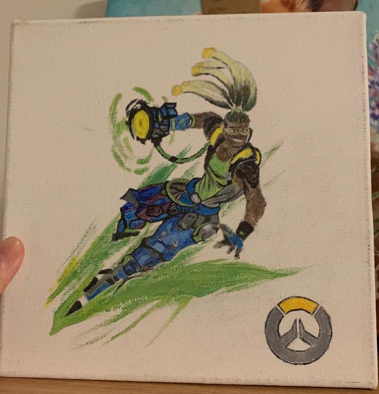
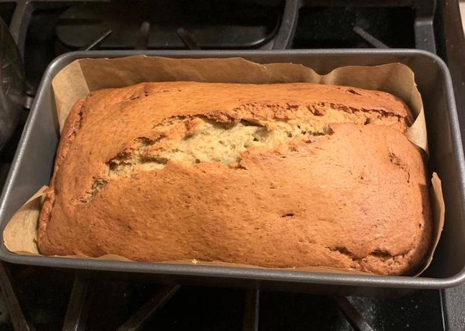

Hobbies
I can't possibly mention hobbies without bringing up my favorite video games! I didn't get to play a lot of video games when I was younger; usually I was the only one out of my friends to not have a gaming console of any kind, whether that was a Wii, a Gameboy, a GameCube, or something else. But because all my friends had them, I grew up absolutely obsessed with video games! This past summer, during quarantine, I finally gave in and used money that I had saved up to buy a PS4. I had known then already that the PS5 was coming out soon, but my reasoning was that one, since it would be a new console I probably couldn't get my hands on one for an affordable amount of money, and two, since all the games that I was dying to play were released for the PS4 anyway, that it would serve me perfectly well. Out of the games that I've played so far (which include many Assassin's Creed games, as well as some Watch Dogs games, and even some Call of Duty, and more), my favorite is definitely the one shown here: Horizon Zero Dawn. This is the game that I've sunk the most hours into while I have time at home, and the game that I'm most dedicated to. Honorable mentions for me are Assassin's Creed Valhalla, Stardew Valley, and Spiderman. Of course, there are many games that I'm still waiting on to play, too:
- Red Dead Redemption
- Fallout series
- Tomb Raider
- Uncharted
- Mass Effect Andromeda

And speaking of video games, here's a video game character I painted! I'm not wonderful with paints, and to be completely honest somewhere at home I'm pretty sure there's an absolutely disastrous self-portrait I did where my skin tone looks green-ish gray, but simple greens and browns I can handle. This character's name is Lucio, from the popular first-person shooter game Overwatch. He's one of my friend's favorite heroes, and especially seeing as how she always somehow seems to wind up playing support, I thought it would be nice to paint him. It was an incredibly small canvas that I was working on, so I'm pretty sure the hour or so that I spent on that painting gave me back problems, but it was worth it to see how excited she got. In fact, when we came to NYU, she brought the painting with her, to display in her room!
Not all my hobbies are video game related though! Especially since moving to college, my appreciation for a hot, homecooked meal has skyrocketed. Sometimes, a bowl of something that your mom would make you a home can cure every little thing that you had going on. So admittedly, my interest in cooking isn't totally because I like cooking in general, although it can be fun, but rather because I'm interested in replicating the flavors of my mom's food. The spicy noodle dish here is one of the first ones I was able to master, mostly because there are only four components to the soup, and the noodles and veggies only require boiling. I have learned other meals since then! But on a lazy or busy day when I can't be bothered to cook side dishes to go along with a bowl of white rice, a bowl of spicy noodles will do perfectly well.

As it happens, in a similar vein, I also enjoy baking! I personally much prefer savory to sweet, so I don't find myself wanting to bake/craving sweets very often, but I've definitely mastered banana bread. Arguably, it is one of the simpler baked goods - but for me, almost nothing can rival a good slice of banana bread, still hot from the oven. Aside from Napoleon cake, banana bread (and zucchini bread too) are my favorite baked goods. Worth mentioning too though are macarons, "Caramel Cookie Crunch" Talenti gelato, and a layered matcha crêpe cake from the bakery Lady M (although that last one is quite expensive).
On a slightly different note: I also have been attempting to learn how to play the guitar! I played the violin for over ten years, but it's quite different since I primarily learned to play classical music rather than pop. My progress is pretty slow since I'm pretty preoccupied with academics and other things, but I've learned a number of songs, such as Safe & Sound by Taylor Swift (for the Hunger Games movies), Cherry Wine by Hozier, and Lights Down Low by MAX. Currently, I'm trying to learn Tears in Heaven by Eric Clapton, but it's a rather difficult piece for me since I'm self-taught, and progress is slower than ever. It's a beautiful song though, so I'm determined!
Every Saturday night, I gather with my friends and we play D&D. Out of all of my hobbies, this is what I'd say I'm most consistent at, although partially it is due to social obligation of fulfilling an established routine. It isn't really that any of us are totally, a hundred percent dedicated/fanatics about the game - although our DM (Dungeon Master, or GM, Game Master) is really into it - but it's definitely a nice excuse to get everyone together for a few hours every Saturday so we can hang out and socialize for a bit.
Lastly: I really do enjoy slam poetry. I was part of my high school's slam poetry club for three years, and was co-captain my senior year. It was a great way to let my creative side out once in a while, and hear from others about things I could change, both in my performance and in my piece itself, to make me a stronger poet. I still write occasionally, and I'd like to join a club here too, if I have the time.
For additional information, or to nerd out about video games, please contact Charlie here.